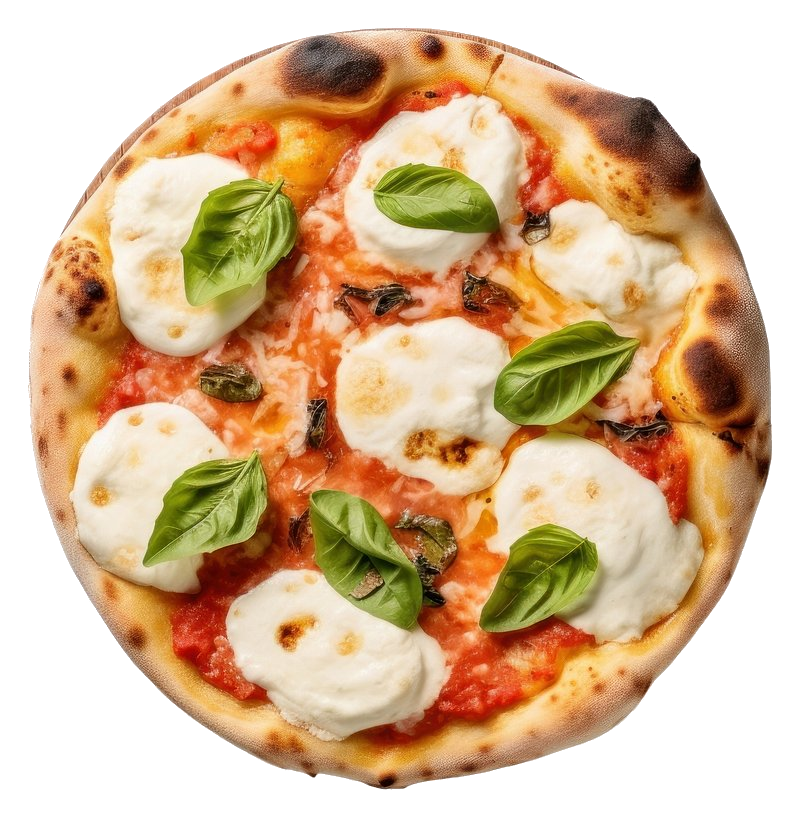

Eat

At the core of Bytes and Bites is the combination of coding and pizza with a side of community. While we order from various pizza chains for our meetups pizza is a satisfying and relatively easy to make. So, to keep with the theme of sharing knowledge here is recipe for a simple Margherita pizza:
Ingredients
Dough
- 150g strong bread flour
- 1/2 tsp yeast
- 1/2 tsp salt
- 1/2 tbsp olive oil
- 100ml warm water
Sauce
- 50ml passata
- 1 small clove of garlic
- 1/2 tsp of dried basil or 6 - 8 basil leaves
- 1/2 tsp olive oil
- salt and pepper to taste
Toppings
- Mozzarella to taste
Recipe
Dough
- Mix the dry ingredients in a large bowl
- Make a well, or dent, in the pile of dry ingredients
- Add the water and oil to into the well and mix with a spoon or clean hands
- Empty the dough onto a clean surface that has a light dusting of flour and knead the dough for 5-10 minutes
- Return the dough to the bowl (optional: lightly oil the bowl first) and cover with a tea towel
Sauce
The sauce can be cooked to bring the sweet richness of the tomatoes out, it can be made with a simple rough chopping of the ingredients, or simply all added to a blender or food processor.
Cooking
- Crush, grate, or finely chop the garlic and add to a pot or pan with heated oil
- Let it fry for 30 seconds on a medium high heat, moving regularly to avoid burning
- If using dried basil add it now and let it fry for a few seconds
- Add the pasata to the pot/pan and mix the garlic in before leaving to heat for 15 minutes with regular movement
- If the sauce has reduced too much and the volume is too little add some water and mix through
- If using fresh basil roughly chop it and add it to the sauce before taking it off the heat
Chop & Mix
- Use a grate, dice, or crush your garlic and add to a bowl
- Add pasata and olive oil to the bowl and mix
- Roughly chop your basil and add to the bowl if fresh. If dried add directly to the bowl
- Mix the sauce, add salt and pepper to taste, mix against
Blend
- Add all ingredients to a blender or food processor and blend
Pre-heat the oven
- Heat the oven to 220C for a fan oven, if you have a pizza stone use it otherwise place a tray in the oven whilst it heats. Pizza ovens should be at about 400C
Toppings
- Cut the Mozzarella into slices or tear into pieces with your hands
Making the base
- Flour your clean surface and gently knead the dough on it
- Form the dough approximately into a ball on the lightly floured surface
- Use a rolling pin, or another clean cylinder to flatten the ball into something approximating a circle with ~25cm diameter
From base to Pizza
- Place the pizza base on a lightly floured baking sheet
- Add the sauce to the base smoothing with the back of a spoon, it doesn’t need to be perfect
- Evenly scatter your Mozzarella across the base
- Place the pizza and baking sheet onto the preheated stone or tray (be careful to not burn yourself or damage your kitchen surface). If cooking in a pizza oven you will not need the baking sheet in the oven
- If in a regular oven cook the pizza for 8-10 minutes, checking to confirm the base is cooked to your wishes. If in a pizza oven cook for 90-120 seconds
- Remove from your oven of choice, put the pizza on a plate and enjoy!
Bonus seasoning
- Try some chili infused olive oil on your pizza once cooked
- A few fresh basil leaves will impart a lot of flavour and will nicely garnish the pizza
- “Pizza oil” usually works well on most pizzas as a dressing post cooking – mix; olive oil, crushed garlic, dried oregano, dried basil, and a little salt